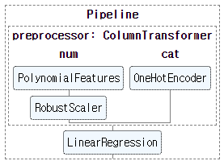
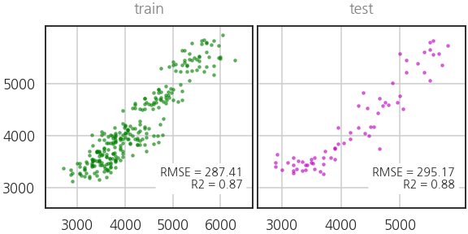

- 저는 tabular data를 다룹니다.
- 간혹 딥러닝을 하고 싶지만 표준화등 전처리도 해야 합니다.
- 범주형 변수를 인코딩해서 feature importance도 보고 싶습니다.
- skorch(sklearn + pytorch)를 사용하면 가능합니다.
1. skorch = sklearn + pytorch
- 저같은 사람들을 위해 skorch라는 라이브러리가 있습니다.
- scikit-learn의 장점인 grid search 등을 딥러닝과 함께 사용할 수 있고
- tutorial에서 transfer learning, U-Net, Seq2Seq 등을 지원합니다.
2. sklearn pipeline
- scikit-learn의 파이프라인은 데이터 전처리에서 발생하는 불확실성을 줄여줍니다.
- 데이터가 거쳐갈 길을 단단하게 만들어줌으로써 실수를 사전에 예방할 수 있습니다.
- 특히 PCA나 One-hot encoding처럼 trainset의 정보를 기억해서 testset에 적용해야 할 때 좋습니다.
2.1. 예제 데이터셋
- 펭귄 데이터셋을 사용해서 펭귄 체중 예측모델을 만들어 봅니다.
- 편의를 위해 결측치까지 싹 지운 채로 시작합니다.
1
2
3
4
5
6
7
8
9
10
11
12
13
14
15
16
17
18
19
20
21%matplotlib inline
import numpy as np
import pandas as pd
import matplotlib.pyplot as plt
import seaborn as sns
from copy import deepcopy
# 시각화 설정
sns.set_context("talk")
sns.set_style("white")
font_title = {"color":"gray"}
# Linux 한글 사용 설정
plt.rcParams['font.family']=['NanumGothic', 'sans-serif']
plt.rcParams['axes.unicode_minus'] = False
# 펭귄 데이터셋 불러오기
df_peng = sns.load_dataset("penguins")
df_peng.dropna(inplace=True)
df_peng.isna().sum() - 실행 결과: 결측치가 모두 제거되었습니다.
1
2
3
4
5
6
7
8species 0
island 0
bill_length_mm 0
bill_depth_mm 0
flipper_length_mm 0
body_mass_g 0
sex 0
dtype: int64
- 데이터셋을 준비합니다.
- 펭귄 체중만 y, 나머지는 모두 X입니다.
1
2
3y = df_peng["body_mass_g"]
X = df_peng.drop("body_mass_g", axis=1)
X.head(3)
- trainset과 testset으로 나눕니다.
1
2
3
4# data split
from sklearn.model_selection import train_test_split
X_train, X_test, y_train, y_test = train_test_split(X, y, test_size=0.2)
2.2. pipeline 구축
- scikit-learn으로 pipeline을 구축합니다.
- numerical feature는 회귀모델 적용을 고려한
PolynomialFeatures와 - 데이터 정규화를 위한
RobustScaler를 거칩니다. - categorical feature는
OneHotEncoder를 거칩니다.
필요한 라이브러리를 불러옵니다.
1
2
3
4
5
6
7
8
9
10
11
12
13
14
15
16# encoder
from sklearn.preprocessing import OneHotEncoder
from sklearn.preprocessing import RobustScaler
# machine learning models
from sklearn.linear_model import LinearRegression
from sklearn.ensemble import RandomForestRegressor
from sklearn.preprocessing import PolynomialFeatures
# pipeline
from sklearn.pipeline import Pipeline
from sklearn.compose import ColumnTransformer
# metrics
from sklearn.metrics import r2_score
from sklearn.metrics import mean_squared_errorpipeline을 구축하는 함수를 만듭니다.
get_model_0()을 실행하면 파이프라인이 만들어질 것입니다.전처리 후 머신러닝 모델로는 선형회귀와 랜덤포레스트를 선택할 수 있습니다.
1
2
3
4
5
6
7
8
9
10
11
12
13
14
15
16
17
18
19
20
21
22
23
24
25
26
27
28
29
30
31def get_model_0(X_cols, degree=1, method="lr"):
X_cols_ = deepcopy(X_cols)
# 1-1.categorical feature에 one-hot encoding 적용
cat_features = list(set(X_cols) & set(["species", "island", "sex"]))
cat_transformer = OneHotEncoder(sparse=False, handle_unknown="ignore")
# 1-2.numerical feature는 Power Transform과 Scaler를 거침
num_features = list(set(X_cols) - set(cat_features))
num_features.sort()
num_transformer = Pipeline(steps=[("polynomial", PolynomialFeatures(degree=degree)),
("scaler", RobustScaler())
])
# 1. 인자 종류별 전처리 적용
preprocessor = ColumnTransformer(transformers=[("num", num_transformer, num_features),
("cat", cat_transformer, cat_features)])
# 2. 전처리 후 머신러닝 모델 적용
if method == "lr":
ml = LinearRegression(fit_intercept=True)
elif method == "rf":
ml = RandomForestRegressor()
# 3. Pipeline
model = Pipeline(steps=[("preprocessor", preprocessor),
("ml", ml)])
return model6번째, 10번째 행을 보시면 조금 특이한 처리가 들어가 있습니다.
feature selection에 사용되는 장치입니다.
feature 이름들을 하드코딩하면 feature selection이 불가능하기 때문에 이렇게 합니다.
- 만들어진 구조를 확인합니다.
- 일단 모든 인자를 모두 입력합니다.
1
2
3
4from sklearn import set_config
set_config(display='diagram')
model_0 = get_model_0(list(X_train.columns), degree=1, method="lr")
model_0
2.3. pipeline 전처리 확인
- pipeline에서 전처리 모듈만 떼어서 실행합니다.
- pipeline의 모듈을 호출하는 방법은 모델이름[“모듈이름”]입니다.
- 따라서 우리의 전처리 모듈은 model_0[“preprocessor”]입니다.
1
2
3X_train_pp = model_0["preprocessor"].fit_transform(X_train)
print(X_train_pp.shape)
X_train_pp[0] - 실행 결과: 첫 행만 찍어봤습니다. 숫자가 많습니다
1
2
3
4(266, 12)
array([ 0. , -0.80645161, 0.08579088, 1. , 1. ,
0. , 0. , 0. , 0. , 1. ,
0. , 1. ])
- 6개의 인자를 넣었는데 12개가 나왔습니다.
- 처음의 0은 LinearRegression에서 만든 intercept 항입니다.
- 네번째 1부터는 species, island, sex의 one-hot encoding 결과물입니다.
- 전처리 이후 데이터 분포도 확인합니다.
- 시각화 코드는 다소 길고, 여기선 중요하지 않아서 접었습니다.
코드 보기/접기
1
2
3
4
5
6
7
8
9
10
11
12
13
14
15
16
17
18
19
20
21
22
23
24
25
26
27
28
29
30
31
32
33
34
35# Figure 생성
fig = plt.figure(figsize=(12, 8), constrained_layout=True)
# Subfigures 생성
subfigs = fig.subfigures(nrows=2, wspace=0.05)
subfigs[0].set_facecolor("lightgray")
subfigs[1].set_facecolor("beige")
# subfigs[0]: raw data
axs0 = subfigs[0].subplots(ncols=3, nrows=1)
sns.kdeplot(X_train["bill_depth_mm"], cut=0, fill=True, ax=axs0[0])
sns.kdeplot(X_train["bill_length_mm"], cut=0, fill=True, ax=axs0[1])
sns.kdeplot(X_train["flipper_length_mm"], cut=0, fill=True, ax=axs0[2])
# subfigs[1]: preprocessed data
axs1 = subfigs[1].subplots(ncols=3, nrows=1)
sns.kdeplot(X_train_pp[:,1], cut=0, fill=True, ax=axs1[0])
sns.kdeplot(X_train_pp[:,2], cut=0, fill=True, ax=axs1[1])
sns.kdeplot(X_train_pp[:,3], cut=0, fill=True, ax=axs1[2])
for ax in axs1:
ax.axvline(0, c="gray", alpha=0.5)
for axs in [axs0, axs1]:
for i, (ax, title) in enumerate(zip(axs, ['bill_depth_mm', 'bill_length_mm', 'flipper_length_mm'])):
ax.set_xlabel("")
ax.set_title(f"{title}", fontdict=font_title, pad=16)
if i > 0:
ax.set_ylabel(" \n")
subfigs[0].suptitle("raw data\n", fontweight="bold")
subfigs[1].suptitle("preprocessed data\n", fontweight="bold")
fig.suptitle(" ")
- RobustScaler의 효과가 잘 보입니다.
2.3. pipeline 학습
pipeline 전체를 사용해서 학습시킵니다.
명령은 scikit-learn 스타일 그대로
.fit()입니다.1
model_0.fit(X_train, y_train)
학습이 잘 되었는지 결과를 확인합니다.
parity plot 시각화 코드는 접어두었습니다.
코드 보기/접기
1
2
3
4
5
6
7
8
9
10
11
12
13
14
15
16
17
18
19
20
21
22
23
24
25
26
27
28
29
30
31
32
33# parity plot
def plot_parity(model, y_true, y_pred=None, X_to_pred=None, ax=None, **kwargs):
if not ax:
fig, ax = plt.subplots(figsize=(5, 5))
if y_pred is None:
y_pred = model.predict(X_to_pred)
ax.scatter(y_true, y_pred, **kwargs)
xbound = ax.get_xbound()
xticks = [x for x in ax.get_xticks() if xbound[0] <= x <= xbound[1]]
ax.set_xticks(xticks)
ax.set_xticklabels([f"{x:.0f}" for x in xticks])
ax.set_yticks(xticks)
ax.set_yticklabels([f"{x:.0f}" for x in xticks])
dxbound = 0.05*(xbound[1]-xbound[0])
ax.set_xlim(xbound[0]-dxbound, xbound[1]+dxbound)
ax.set_ylim(xbound[0]-dxbound, xbound[1]+dxbound)
rmse = mean_squared_error(y_true, y_pred, squared=False)
r2 = r2_score(y_true, y_pred)
ax.text(0.95, 0.1, f"RMSE = {rmse:.2f}\nR2 = {r2:.2f}", transform=ax.transAxes,
fontsize=14, ha="right", va="bottom", bbox={"boxstyle":"round", "fc":"w", "pad":0.3})
ax.grid(True)
return ax
fig, axs = plt.subplots(ncols=2, figsize=(8, 4), constrained_layout=True, sharey=True)
plot_parity(model_0, y_train, X_to_pred=X_train, ax=axs[0], c="g", s=10, alpha=0.5)
plot_parity(model_0, y_test, X_to_pred=X_test, ax=axs[1], c="m", s=10, alpha=0.5)
for ax, title in zip(axs, ["train", "test"]):
ax.set_title(title, fontdict=font_title, pad=16)
단순 선형 회귀 모델인데 제법 쓸만합니다.
이제 pipeline에 랜덤포레스트 모델을 탑재해서 돌려봅니다.
1
2
3model_1 = get_model_0(list(X_train.columns), degree=1, method="rf")
model_1.fit(X_train, y_train)
model_1과적합이 의심되긴 하지만 랜덤포레스트도 잘 나오네요.
이번에는 feature selection도 되는지 확인합니다.
부리 길이
bill_length_mm와 종species만 가지고 결과를 예측해봅니다.1
2model_2 = get_model_0(["bill_length_mm", "species"], degree=1, method="rf")
model_2.fit(X_train, y_train)멀쩡한 인자들을 제외했으니 성능이 떨어지는 건 정상입니다.
pipeline을 작성하기에 따라 feature 중 일부만 넣어도 동작한다는 것이 중요합니다.
3. pytorch deep learning
- 딥러닝은 다른 방법에 비해 복잡하고 연산자원이 많이 들지만 장점이 많습니다.
- 이미지나 시계열을 다룰 때 큰 힘을 발휘하는데, 간혹 tabular data에도 필요합니다.
- pytorch만을 사용해서 모델을 만들어보고 pipeline에 탑재해서도 결과를 얻어봅니다.
3.1. pytorch only
파이토치로 신경망 모델을 만들고 같은 데이터로 같은 문제를 풀어봅니다.
간단한 신경망 모델을 만듭니다. 나중에 pipeline 안에 넣을 겁니다.
feature selection을 대비해서 input dimension을 가변적으로 만듭니다.
1
2
3
4
5
6
7
8
9
10
11
12
13
14
15
16
17
18
19
20
21
22
23
24
25
26
27
28
29
30
31from torch import optim
from torch.optim.lr_scheduler import CyclicLR
import torch
import torch.nn as nn
class RegressorModule(nn.Module):
def __init__(self, ninput=11, init_weights=True):
super(RegressorModule, self).__init__()
self.model = nn.Sequential(nn.Linear(ninput, 16),
nn.ReLU(),
nn.Linear(16, 16),
nn.ReLU(),
nn.Linear(16, 12),
nn.ReLU(),
nn.Linear(12, 8),
nn.ReLU(),
nn.Linear(8, 1),
)
if init_weights:
self._initialize_weights()
def forward(self, X, **kwargs):
return self.model(X)
def _initialize_weights(self):
for m in self.modules():
if isinstance(m, nn.Linear):
nn.init.normal_(m.weight, 0, 0.01)
nn.init.constant_(m.bias, 0)pytorch에 데이터를 넣으려면 tensor로 만들어야 합니다.
1
2X_train_tensor = torch.Tensor(pd.get_dummies(X_train).astype(np.float32).values)
y_train_tensor = torch.Tensor(y_train.astype(np.float32).values)지금 만든 모델에 학습을 시킬 수 있는 코드를 구현합니다.
1만 epoch동안 충분히 데이터를 넣어봅니다.
loss function으로는 RMSELoss를 구현해서 사용했습니다.
1
2
3
4
5
6
7
8
9
10
11
12
13
14
15
16
17
18
19
20
21
22
23
24
25
26net = RegressorModule()
class RMSELoss(nn.Module):
def __init__(self, eps=1e-6):
super().__init__()
self.mse = nn.MSELoss()
self.eps = eps
def forward(self,yhat,y):
loss = torch.sqrt(self.mse(yhat,y) + self.eps)
return loss
loss_func = RMSELoss()
optimizer = optim.Adam(net.parameters(), lr=0.001)
losses = []
for i in range(10000):
optimizer.zero_grad()
output = net.forward(X_train_tensor)
loss = loss_func(output, y_train_tensor.view(-1, 1))
loss.backward()
optimizer.step()
losses.append(loss)
plt.plot(losses)
제법 학습이 잘 된 것 같습니다.
예측 성능을 확인합니다.
1
2
3
4
5
6
7
8
9
10# numpy array를 pytorch tensor로 변환
X_test_tensor = torch.Tensor(pd.get_dummies(X_test).astype(np.float32).values)
# 예측값
y_pred_train_tensor = net.forward(X_train_tensor)
y_pred_test_tensor = net.forward(X_test_tensor)
# pytorch tensor를 다시 numpy array로 변환
y_pred_train = y_pred_train_tensor.detach().numpy()
y_pred_test = y_pred_test_tensor.detach().numpy()딥러닝으로도 제법 괜찮은 성능이 나오는 것을 확인했습니다.
3.2. pytorch @pipeline
- skorch를 이용해서 pytorch를 pipeline 안에 탑재합니다.
- skorch은 pytorch를 scikit-learn 객체처럼 만들어주는 일을 합니다.
- 그래서 skorch로 감싼 pytorch 객체의 학습은
fit()이고, - 예측은
.forward()</b>가 아니라 <b>.predict()입니다.
- skorch의
NeuralNetRegressor()로 딥러닝 모듈 전체를 감싸고, - 학습에 필요한 인자를 매개변수로 전달합니다.
- 그리고 중요한 사항이 하나 있습니다.
- scikit-learn이 뱉는
np.float64를np.float32로 변환해야 합니다. - 이를 위해 custom transformer를 만들어 적용합니다.
1
2
3
4
5
6
7
8
9
10
11
12
13
14
15
16
17
18
19
20
21
22
23
24
25
26
27
28
29
30
31
32
33
34
35
36
37
38
39
40
41
42
43
44
45
46
47
48
49
50
51
52
53
54
55
56
57
58
59
60
61
62from skorch import NeuralNetRegressor
from sklearn.base import BaseEstimator, TransformerMixin
def get_model_T(X_cols, degree=1, method="lr"):
X_cols_ = deepcopy(X_cols)
# 1-1.categorical feature에 one-hot encoding 적용
cat_features = list(set(X_cols) & set(["species", "island", "sex"]))
cat_transformer = OneHotEncoder(sparse=False, handle_unknown="ignore")
# 1-2.numerical feature는 Power Transform과 Scaler를 거침
num_features = list(set(X_cols) - set(cat_features))
num_features.sort()
num_transformer = Pipeline(steps=[("polynomial", PolynomialFeatures(degree=degree)),
("scaler", RobustScaler())
])
# 1. 인자 종류별 전처리 적용
preprocessor = ColumnTransformer(transformers=[("num", num_transformer, num_features),
("cat", cat_transformer, cat_features)])
# 2. float64를 float32로 변환
class FloatTransformer(BaseEstimator, TransformerMixin):
def __init__(self):
pass
def fit(self, X, y=None):
return self
def transform(self, x):
return np.array(x, dtype=np.float32)
# 3. 전처리 후 머신러닝 모델 적용
if method == "lr":
ml = LinearRegression(fit_intercept=True)
elif method == "rf":
ml = RandomForestRegressor()
elif method == "torch":
ninput = len(num_features) + 1
if "species" in cat_features:
ninput += 3
if "island" in cat_features:
ninput += 3
if "sex" in cat_features:
ninput += 2
net = NeuralNetRegressor(RegressorModule(ninput=ninput, init_weights=False),
max_epochs=1000, verbose=0,
warm_start=True,
# device='cuda',
criterion=RMSELoss,
optimizer = optim.Adam,
optimizer__lr = 0.01
)
ml = net
# 3. Pipeline
model = Pipeline(steps=[("preprocessor", preprocessor),
("float64to32", FloatTransformer()),
("ml", ml)])
return model
모델을 만들고 확인합니다.
앞서 pytorch로 구현한 뉴럴넷 구조가 그대로 들어가 있습니다.
1
2
3model_T = get_model_T(list(X_train.columns), degree=1, method="torch")
model_T.fit(X_train, y_train.astype(np.float32).values.reshape(-1, 1))
model_T성능을 확인합니다. 준수하네요.

4. permutation feature importance
- 같은 파이프라인에서 선형, 트리, 딥러닝이 모두 구현되었습니다.
- 각각의 인자 중요도를 한번 확인해보겠습니다.
- permutation importance를 사용합니다.
1
2
3
4
5
6
7
8
9
10
11
12
13
14
15
16
17
18
19from sklearn.inspection import permutation_importance
# Linear Regression
pi_0 = permutation_importance(model_0, X_test, y_test, n_repeats=30, random_state=0)
# Random Forest
pi_1 = permutation_importance(model_1, X_test, y_test, n_repeats=30, random_state=0)
# Neural Network
pi_T = permutation_importance(model_T, X_test, y_test, n_repeats=30, random_state=0)
# 시각화
fig, axs = plt.subplots(ncols=3, figsize=(15, 5), constrained_layout=True, sharey=True)
for ax, pi, title in zip(axs, [pi_0, pi_1, pi_T], ["Linear Reg.", "Random Forest", "Neural Net"]):
ax.barh(X_test.columns, pi.importances_mean, xerr=pi.importances_std, color="orange")
ax.invert_yaxis()
ax.set_xlim(0, )
ax.set_title(title, fontdict=font_title, pad=16)
- 입력 feature별 인자 중요도가 깔끔하게 정리되었습니다.
- 양상도 전반적으로 비슷하게 나오네요.
- 사소한 기능같지만 tabular data를 딥러닝으로 돌렸을 때 이 그림을 그리기가 어려웠습니다.
- 이 글과 코드가 비슷한 어려움을 겪는 여러분께 도움이 되면 좋겠습니다.